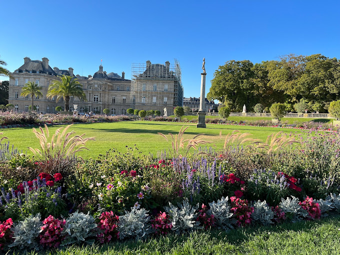
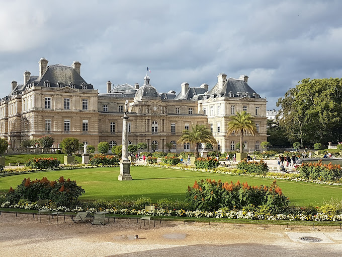
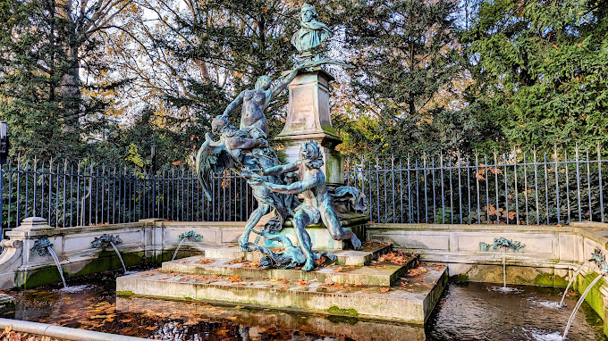

TOURIST SPOT
LUXEMBORG GARDEN
• The Jardin du Luxembourg, known in English as the Luxembourg Garden, colloquially referred to as the Jardin du Sénat, is located in the 6th arrondissement of Paris, France.
  